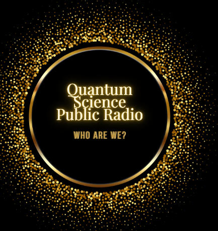

This was made directly for a space where QSP members can join us for a safe space where they can listen to music presented directly by their own members, and have a chance to meet said presenter(s), and have a place to know who is presenting, thereas they can feel safe while listening to the radio and have a possible connection with the presenter. I, May or also known as ope674c, have been wanting to become a presenter for years, my story is below. I've been passionate for becoming a presenter since I was in elementary school when a teacher of mine said she was a presenter before she became a teacher, which makes me passionate to continue this service for people within QSP. This station is meant to be for a over 13 audience. Our station entails having minor swear words, either fully clean music, or radio edits. If we were ever to choose to go wider, we would create a dedicated event for it that goes off every night. Please also note in the event that a presenter starts presenting explicit music, contact a station supervisor. Owned and managed by ope674c, or also known as May.